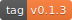
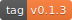

Warning: this is a development version of TiddlyDrive. It may contain untested features. If you meant to go to the stable app, you can find it at https://tiddlydrive.github.io
Thanks for using Tiddly Drive. The project is open source and license can be found here. If you would like to contribute, the repository is here.
If you like my work, you can donate to me via Bitcoin: 1KWgrQZM1mTrzoo6GKo1ijTbXPSWcaVRbY favorite
Firefox doesn't currently support certain features
Not recommended for large files
Override the save-to-drive functionality and save normally
 by adding the Tiddly Drive addon.
by adding the Tiddly Drive addon. 
